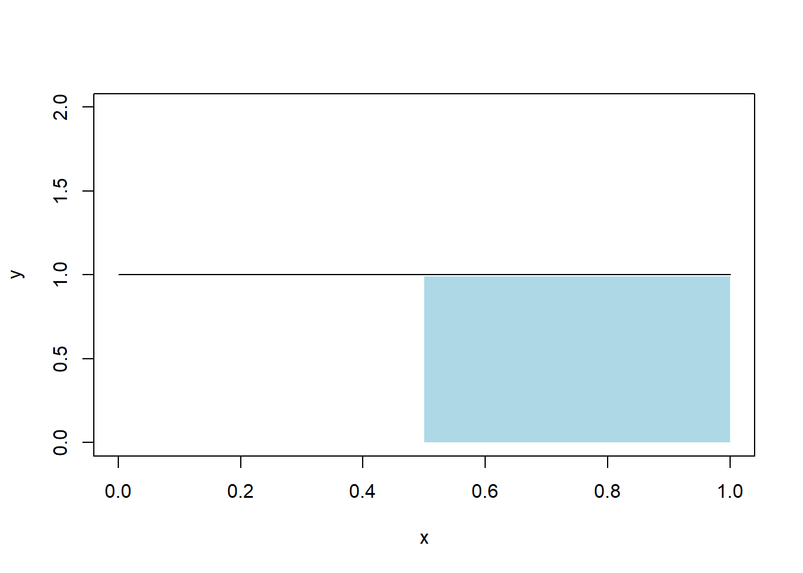
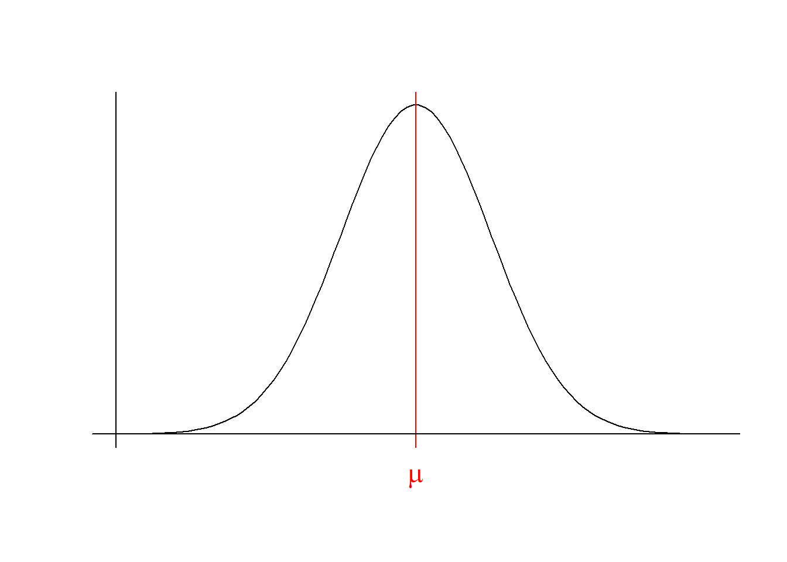

Chapter 10 MODELOS DE PROBABILIDADE
Como visto no capítulo 6, descreve-se uma variável aleatória pela sua Função de Distribuição ou pela sua Função de Densidade/Probabilidade.
Aqui, estudaremos alguns tipos de variáveis aleatórias conhecidas e suas aplicações.
10.1 Modelos Discretos
10.1.1 Modelo Uniforme Discreto
Esse modelo é utilizado quando temos um número finito de possibilidades, no qual todas elas são equiprováveis.
Seja X uma variável aletória que segue o modelo uniforme discreto, então escreveremos: \(X\sim U_d(A)\), onde \(A\) é o conjunto de valores possíveis para a variável: \(A=\{x_1,x_2,\;...\;,x_n\}\).
Função de Probabilidade: \(p(x_i)=\frac{1}{n}\;,\;i=1,2,...,n\)
Exemplo: Vamos lançar um dado honesto e a variável aletória X será a face observada. É fácil observar que \(X\sim U_d(\{1,2,3,4,5,6\})\):
\(p(x_i)=\frac{1}{6}\)
10.1.2 Modelo de Bernoulli
Esse modelo é utilizado quando temos apenas duas opções, que chamaremos de fracasso e sucesso, ou 0 e 1.
Notação: \(X\sim Bernoulli(p)\) onde \(p\) é a probabilidade de sucesso.
Função de Probabilidade:
\(p(1)=P(X=1)=p\)
\(p(0)=P(X=0)=1-p\)
Exemplo: Lançar uma moeda equilibrada e observar o lado virado para cima.
\[ \begin{align*} &X = \begin{cases} 1 & \text{, se cara}\\ 0 & \text{, se coroa} \end{cases} \end{align*} \]
Como a probabilidade de sair cara é \(\frac{1}{2}\), então \(X\sim Bernoulli(\frac{1}{2})\).
10.1.3 Modelo Binomial
Suponha que vamos realizar \(n\) ensaios de Bernoulli independentes e de probabilidade \(p\) e X será a quantidade de sucessos obtidas nos \(n\) ensaios. Então diremos que X segue uma Binomial de parâmetros \(n\) e \(p\): \(X\sim Bin(n,p)\)
Função de Probabilidade: \(p(x)={n\choose x}\cdot p^x\cdot(1-p)^{n-x}\)
Exemplo: Suponha que vamos lançar 100 moedas equilibradas e X será a quantidade de caras observadas. \(X\sim Bin(100, \frac{1}{2})\)
Qual a probabilidade de sair exatamente 60 caras?
\[ \begin{align*} p(60)={100\choose 60}\cdot\Big(\frac{1}{2}\Big)^{60}\cdot\Big(\frac{1}{2}\Big)^{40} = \end{align*} \]
10.1.4 Modelo Geométrico
Suponha que vamos realizar uma sequência de ensaios de Bernoulli até acontecer o primeiro sucesso, e seja X a quantidade de fracassos antes do primeiro sucesso. Então X segue uma geométrica de parâmetro \(p\), onde \(p\) é a probabilidade de sucesso.
Notação: \(X\sim Geo(p)\)
Função de Probabilidade: \(p(x)=p(1-p)^x,\;x=0,1,2,...\)
Exemplo: Em uma linha de produção de alta precisão, assim que um item apresenta defeito, a linha de produção é interrompida para manutenção. A probabilidade de ter um defeito em um dia é de \(\frac{1}{100}\). Qual a probabilidade de termos uma manutenção no sexto dia?
\[ \begin{align*} p(5)=\Big(\frac{1}{100}\Big)\cdot\Big(\frac{99}{100}\Big)^5= \end{align*} \]
10.1.5 Modelo Poisson
Suponha que nosso interesse seja contar a quantidade de eventos que ocorreram em uma unidade de medida. Chamaremos de \(\lambda\) a taxa de ocorrência do evento por unidade de medida, e diremos que \(X\) segue um modelo Poisson de parâmetro \(\lambda\).
Notação: \(X\sim Pois(\lambda)\)
Função de Probabilidade: \(p(x)=\frac{e^{-\lambda}\cdot\lambda^x}{x!},\;x=0,1,...\)
Exemplo: Em um certo pedágio, passam em média 50 carros em uma manhã qualquer, qual a probabilidade de passar 60 carros em uma manhã?
\[ \begin{align*} p(60)=\frac{e^{-50}\cdot\lambda^{60}}{60!}= \end{align*} \]
10.2 Modelos Contínuos
10.2.1 Modelo Uniforme Contínuo
Diremos que \(X\) segue um modelo uniforme contínuo no intervalo \([a,b]\subset\mathbb{R}\) se todos os subintervalos de \([a,b]\) de mesmo comprimento tenham a mesma probabilidade.
Notação: \(X\sim U[a,b]\)
Função de Densidade: \(f(x)=\frac1{b-a},\;a\le x\le b\)
Exemplo: em um programa de TV que dura 1 hora, o telespectador pode mudar de canal a qualquer momento. Qual a probabilidade de que o telespectador assista a maior parte do programa.
Solução: \(X\sim U[0,1]\)Assistir a maior parte significa assistir mais de \(\frac12\) do programa, portanto queremos \(P(X>\frac12)\), podemos resolver essa probabilidade de maneira geométrica. A área que queremos obter é a área entre \(\frac12\) e \(1\):

É fácil notar que a área do retângulo é \(\frac12\cdot1=\frac12\), portanto \(P(X>\frac12)=\frac12\).
10.2.2 Modelo Exponencial
Suponha que queremos determinar o tempo de espera para o ocorrência de um evento. Então usaremos uma distribuição exponencial de parâmetro \(\lambda\) onde \(\lambda\) representa a taxa de ocorrência do evento por unidade de medida.
Notação: \(X\sim exp(\lambda)\)
Função de Densidade: \(f(x)=\lambda e^{-\lambda x},\;x>0\)
Exemplo: Um call center recebe chamadas telefônicas a cada \(X\) horas, a taxa de ocorrência por hora é de 5 chamadas. Qual a probabilidade de um intervalo entre chamadas ser inferior a 30 minutos?
\[ \begin{align*} &X\sim exp(5)\\ &f(x)=5e^{-5x},\;x>0\\ &P(X<\frac12)=\int_0^\frac125e^{-5x}dx=-e^{-5x}|_0^\frac12\\ &=1-e^\frac52=0,918 \end{align*} \]
10.2.3 Modelo Normal
Uma variável aleatória \(X\) segue um modelo normal se sua função de densidade é a seguinte:
\[ \begin{align*} &f(x)=\frac1{\sigma\sqrt{2\pi}}e^{-\frac{(x-\mu)^2}{2\sigma^2}},\;x\in\mathbb{R} \end{align*} \]
Os parâmetros \(\mu\) e \(\sigma\) representam respectivamente a média e variância da distribuição.

A função de distribuição da Normal não possui forma fechada pois sua integral não possui primitiva. E, também, integrar sua função de densidade para encontrar probabilidades não é algo trivial. Portando, usaremos uma técnica chamada padronização.
Proposição: Seja \(X\sim N(\mu, \sigma^2)\text{, então } Z=\frac{X-\mu}{\sigma}\) terá distribuição \(N(0,1)\).
Assim, para encontrar as probabilidades de interesse em uma Normal qualquer, encontraremos a probabilidade equivalente em uma \(N(0,1)\) (chamada “Normal Padrão”). Os valores da função de distribuição da Normal Padrão são representados por \(\Phi(z)\), e estão organizados em uma tabela para auxiliar nos cálculos de probabilidade.
\[ \begin{align*} &X\sim N(\mu,\sigma^2)\\ &Z=\frac{X-\mu}\sigma\sim N(0,1)\\ &P(a\le X\le b) = P(\frac{a-\mu}\sigma\le Z\le\frac{b-\mu}\sigma)= \Phi(\frac{b-\mu}\sigma)-\Phi(\frac{a-\mu}\sigma) \end{align*} \]